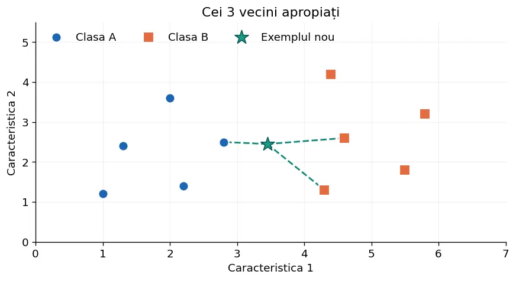
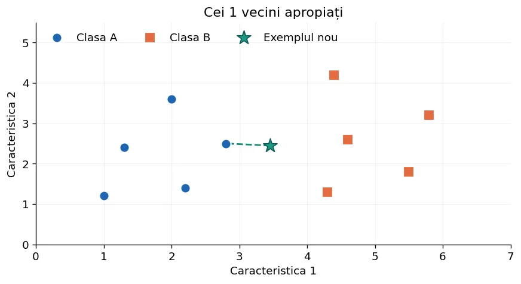
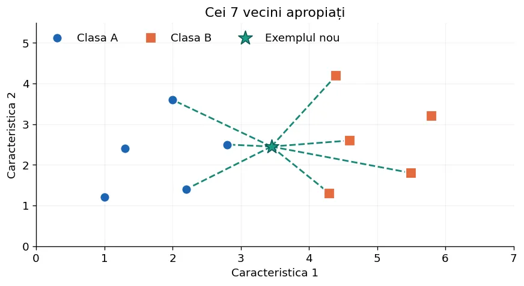
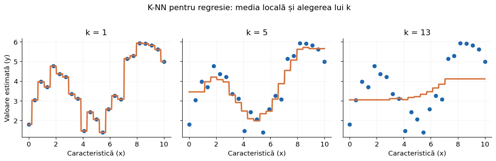
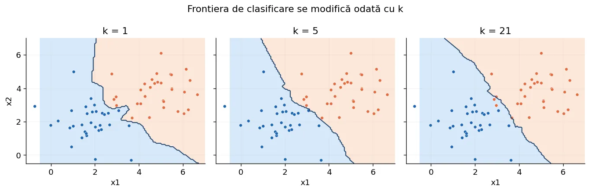
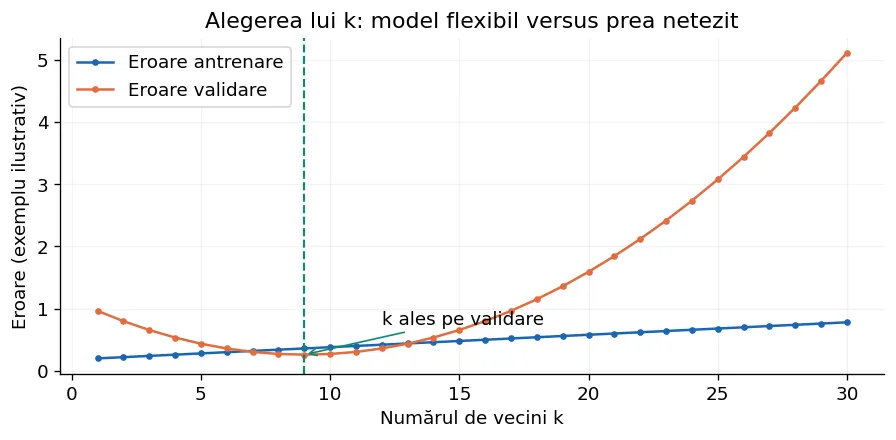
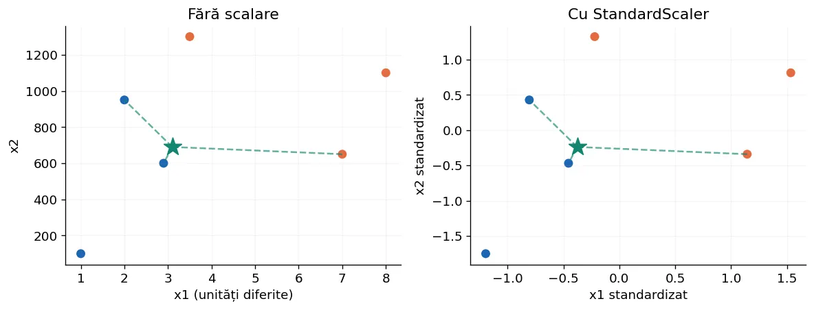

K-Nearest Neighbors (K-NN)
Învățăm să prezicem o etichetă sau o valoare numerică folosind exemplele cele mai asemănătoare. Pornim de la geometrie și calcule manuale, construim K-NN pas cu pas în Python și ajungem la pipeline-uri scikit-learn care tratează inclusiv date categorice.
1. Întrebarea fundamentală: cu cine seamănă exemplul nou?
Să presupunem că avem rezultatele elevilor la două teste și știm cine a rezolvat corect o sarcină suplimentară. Pentru un elev nou, căutăm elevii cu rezultate asemănătoare. Dacă majoritatea vecinilor au reușit, prezicem aceeași clasă. Aceasta este ideea K-Nearest Neighbors (K-NN), adică metoda celor k cei mai apropiați vecini.
Algoritmul este supervizat: exemplele de antrenare au deja un răspuns cunoscut. Nu caută o dreaptă sau coeficienți globali, ci folosește vecinii din vecinătatea punctului nou. Este un model bazat pe exemple (instance-based), numit uneori „lazy learning”: munca de căutare se face în mare parte la predicție.

2. Două probleme diferite: clasificare și regresie
| Clasificare | Regresie |
|---|---|
| Răspunsul este o categorie | Răspunsul este un număr real |
| Ex.: e-mail spam / normal; specie de floare | Ex.: prețul unei locuințe; scor numeric |
| Combinăm etichetele prin vot | Combinăm valorile prin medie |
KNeighborsClassifier | KNeighborsRegressor |
Aceeași etapă de căutare a vecinilor este folosită în ambele cazuri. Doar calculul predicției finale diferă.
3. Reprezentarea unui exemplu prin caracteristici
Un exemplu poate avea o singură caracteristică, de exemplu temperatura, sau mai multe: înălțime, greutate, vârstă. Scriem un exemplu numeric ca vector:
Datele de antrenare pot fi organizate într-o matrice X, cu n rânduri (exemple) și d coloane (caracteristici), iar răspunsurile într-o listă y de lungime n. O caracteristică relevantă ajută la definirea asemănării; una irelevantă poate deteriora distanța.
4. Cum calculăm distanța? Euclidiană, Manhattan, Minkowski
Într-un plan, distanța euclidiană este lungimea segmentului dintre două puncte. Se obține din teorema lui Pitagora:
Pentru d caracteristici, adunăm pătratele diferențelor pe toate coloanele. Distanța Manhattan adună modulele diferențelor, ca un traseu pe străzi perpendiculare:
Ultima formulă este distanța Minkowski: pentru p=1 avem Manhattan; pentru p=2 avem Euclidiană. În scikit-learn, metric="minkowski", p=2 înseamnă exact distanță euclidiană.
import math def euclidiana(a, b): suma = 0.0 for i in range(len(a)): suma += (a[i] - b[i]) ** 2 return math.sqrt(suma) def manhattan(a, b): suma = 0.0 for i in range(len(a)): suma += abs(a[i] - b[i]) return suma print(euclidiana([1, 2], [4, 6])) # 5.0 print(manhattan([1, 2], [4, 6])) # 7.0
5. Clasificarea K-NN: un calcul complet, de mână
Considerăm un exemplu nou Q=(3,2). În tabel avem exemple etichetate cu A sau B. Calculăm distanțele și ordonăm crescător:
| Punct | Coordonate | Clasa | d(Q, punct) |
|---|---|---|---|
| P₁ | (2,2) | A | 1 |
| P₂ | (4,2) | B | 1 |
| P₃ | (3,4) | A | 2 |
| P₄ | (6,2) | B | 3 |
| P₅ | (3,6) | B | 4 |
Pentru k=3, cei trei vecini sunt P₁, P₂ și P₃. Voturile sunt A=2, B=1, deci prezicem A. Pentru k=5, B câștigă cu 3 voturi. Așadar, alegerea lui k poate schimba răspunsul chiar pe aceleași date.


6. Implementare de la zero: clasificare în două etape
Mai întâi calculăm distanța dintre exemplul nou și fiecare rând din X. Apoi ordonăm perechile (distanță, etichetă), alegem primele k și numărăm voturile. În caz de egalitate folosim o regulă explicită: cea mai mică etichetă în ordine lexicografică, ceea ce face algoritmul reproductibil.
from math import sqrt def distanta(a, b): suma = 0.0 for i in range(len(a)): suma += (a[i] - b[i]) ** 2 return sqrt(suma) def knn_clasificare(X, y, nou, k): if len(X) != len(y) or not (1 <= k <= len(X)): raise ValueError("Dimensiuni sau k invalide") vecini = [] for i in range(len(X)): d = distanta(X[i], nou) vecini.append((d, str(y[i]))) vecini.sort(key=lambda pereche: pereche[0]) voturi = {} for d, eticheta in vecini[:k]: voturi[eticheta] = voturi.get(eticheta, 0) + 1 # Maximul voturilor; egalitățile sunt rezolvate alfabetic. return sorted(voturi, key=lambda c: (-voturi[c], c))[0] X = [[2, 2], [4, 2], [3, 4], [6, 2], [3, 6]] y = ["A", "B", "A", "B", "B"] print(knn_clasificare(X, y, [3, 2], 3)) # A
7. Ce se întâmplă la egalitate? Și dacă un vecin este identic?
Pentru clase diferite care primesc același număr de voturi, trebuie definită o regulă: alegerea clasei lexicografic mai mici, prioritizarea vecinului cel mai apropiat sau ponderarea după distanță. Fără o regulă, predicția poate depinde de ordinea datelor. Alegerea unui k impar reduce unele egalități doar în clasificarea binară neponderată; nu garantează absența egalităților în clasificarea multiclasă.
Dacă exemplul nou coincide cu un punct de antrenare, distanța este 0. Pentru ponderi inverse, nu împărțim la zero: acordăm votul numai vecinilor aflați la distanța 0. În scikit-learn, această situație este tratată de implementarea bibliotecii.
def vot_ponderat(vecini): # vecini = [(distanta, eticheta), ...] identici = [(d, c) for d, c in vecini if d == 0] if identici: vecini = identici ponderi = [(1.0, c) for _, c in vecini] else: ponderi = [(1.0 / d, c) for d, c in vecini] scor = {} for p, c in ponderi: scor[c] = scor.get(c, 0.0) + p return sorted(scor, key=lambda c: (-scor[c], c))[0] print(vot_ponderat([(0.1, "A"), (0.5, "B"), (0.6, "B")]))
8. Vot egal sau vot ponderat după distanță?
Votul obișnuit (weights="uniform") tratează toți cei k vecini la fel. Varianta weights="distance" oferă mai multă influență punctelor foarte apropiate. De exemplu, un vecin de clasa A la d=0,1 are pondere 10, iar doi de clasa B la d=1 au împreună pondere 2: A câștigă deși este în minoritate numerică.
Aceste scoruri pot fi normalizate, dar fracțiile de vot nu sunt automat probabilități calibrate. În scikit-learn, predict_proba returnează proporțiile/ponderile normalizate pe clase.
9. K-NN pentru regresie: media celor mai apropiate valori
Acum fiecare vecin are un răspuns numeric: preț, temperatură sau durată. Dacă cei trei vecini au valorile 10, 12 și 20, predicția neponderată este media lor: (10+12+20)/3=14. Dacă distanțele sunt 1, 2 și 4, media ponderată cu inversul distanței acordă mai multă importanță valorii 10.

from math import sqrt def knn_regresie(X, y, nou, k): if len(X) != len(y) or not (1 <= k <= len(X)): raise ValueError("Dimensiuni sau k invalide") vecini = [] for i in range(len(X)): dist = sqrt(sum((a - b) ** 2 for a, b in zip(X[i], nou))) vecini.append((dist, y[i])) vecini.sort(key=lambda p: p[0]) valori = [raspuns for _, raspuns in vecini[:k]] return sum(valori) / len(valori) X = [[1], [2], [3], [4], [5]] y = [10, 12, 18, 20, 24] print(knn_regresie(X, y, [2.4], 3)) # 13.333...
10. Regresie ponderată și predicții pentru exemple nemaivăzute
Media ponderată este utilă atunci când un vecin foarte apropiat este mai relevant decât unul aflat la limita vecinătății. Totuși, un vecin foarte zgomotos poate domina dacă distanța lui este mică. Pe lângă uniform și distance, weights poate primi o funcție personalizată.
def medie_locala(vecini): # Lista (distanta, valoare), deja selectată la k vecini. identici = [y for d, y in vecini if d == 0] if identici: return sum(identici) / len(identici) sus = sum(y / d for d, y in vecini) jos = sum(1.0 / d for d, y in vecini) return sus / jos print(round(medie_locala([(1, 10), (2, 12), (4, 20)]), 3))
11. Cum alegem numărul de vecini k?
Dacă k=1, fiecare punct poate influența puternic clasificarea și modelul este sensibil la erori de etichetare sau zgomot. Dacă k este foarte mare, modelul poate ignora diferențele locale și poate favoriza clasa majoritară. În regresie, un k prea mare poate „aplatiza” relația dintre caracteristici și răspuns.


Alegem k prin validare încrucișată, nu uitându-ne continuu la scorul public al competiției. Pentru test, datele sunt folosite o singură dată pentru evaluarea finală.
12. De ce trebuie scalate caracteristicile?
Să presupunem că un set de date descrie persoane prin vârstă în ani (15–65) și salariu în lei (2000–15000). O diferență de 1000 lei poate domina complet o diferență de 20 ani în distanța euclidiană, chiar dacă vârsta este foarte importantă. K-NN nu știe ce unitate de măsură este mai relevantă.

StandardScaler scade media și împarte la abaterea standard calculată numai pe antrenare. MinMaxScaler poate aduce valori într-un interval; nicio metodă nu este universal optimă.
from sklearn.pipeline import make_pipeline from sklearn.preprocessing import StandardScaler from sklearn.neighbors import KNeighborsClassifier model = make_pipeline( StandardScaler(), KNeighborsClassifier(n_neighbors=3) ) X = [[20, 3000], [22, 3500], [55, 9000], [57, 10000]] y = [0, 0, 1, 1] model.fit(X, y) print(model.predict([[23, 3300]]))
13. Dacă o caracteristică NU este numerică?
K-NN standard calculează distanțe între vectori numerici. O etichetă precum „roșu” sau „albastru” nu are o diferență numerică definită. Nici "București" − "Cluj" nu este o operație matematică legitimă. Trebuie să decidem ce înseamnă asemănarea pentru acea caracteristică.
| Tip | Exemplu | Abordare rezonabilă |
|---|---|---|
| Nominal, fără ordine | culoare: roșu / verde / albastru | One-hot: câte o coloană 0/1 |
| Ordinal, cu ordine | nivel: mic / mediu / mare | Codificare ordinală doar dacă ordinea este relevantă |
| Text liber | mesaj, descriere | TF–IDF / vectori de caracteristici; adesea metrică cosine |
| Dată calendaristică | zi și lună | Componente numerice potrivite; sezonalitatea poate cere codificare ciclică |
| Valoare lipsă | necunoscut | Imputare pe antrenare, indicator de lipsă, sau altă strategie |
O codificare 0=roșu, 1=verde, 2=albastru este greșită pentru o categorie nominală dacă distanța ar sugera că roșu este mai apropiat de verde decât de albastru.
14. One-hot encoding — de la exemplu la vector
Avem trei categorii pentru „culoare”. Reprezentarea one-hot creează trei poziții: roșu=(1,0,0), verde=(0,1,0), albastru=(0,0,1). Nu atribuim o ordine artificială. Totuși, categoria cu multe valori poate produce multe coloane; atunci ponderea ei în distanță trebuie analizată.
| Culoare | roșu | verde | albastru |
|---|---|---|---|
| roșu | 1 | 0 | 0 |
| verde | 0 | 1 | 0 |
| albastru | 0 | 0 | 1 |
culori = ["rosu", "verde", "albastru"] def codifica(culoare): return [1 if culoare == c else 0 for c in culori] for culoare in culori: print(culoare, codifica(culoare))
15. Când numeric și categoric apar împreună
Un exemplu de concurs poate conține vârstă=17, număr probleme rezolvate=12 și tip curs="online". Preprocesarea potrivită are două ramuri: caracteristicile numerice sunt imputate și standardizate; cele categorice sunt imputate și codificate one-hot. Abia după aceea aplicăm K-NN.
import pandas as pd from sklearn.compose import ColumnTransformer from sklearn.impute import SimpleImputer from sklearn.neighbors import KNeighborsClassifier from sklearn.pipeline import Pipeline from sklearn.preprocessing import OneHotEncoder, StandardScaler X = pd.DataFrame({ "varsta": [15, 16, 17, 18, 19, 20], "ore": [2, 4, 7, 8, 9, 11], "curs": ["online", "sala", "online", "sala", "online", "sala"] }) y = [0, 0, 0, 1, 1, 1] numerice = Pipeline([ ("lipsa", SimpleImputer(strategy="median")), ("scalare", StandardScaler()) ]) categorice = Pipeline([ ("lipsa", SimpleImputer(strategy="most_frequent")), ("onehot", OneHotEncoder(handle_unknown="ignore")) ]) transformari = ColumnTransformer([ ("num", numerice, ["varsta", "ore"]), ("cat", categorice, ["curs"]) ]) model = Pipeline([ ("preprocesare", transformari), ("knn", KNeighborsClassifier(n_neighbors=3)) ]) model.fit(X, y) exemplu = pd.DataFrame({"varsta": [17], "ore": [10], "curs": ["online"]}) print(model.predict(exemplu))
16. Text, imagini și distanțe potrivite
Pentru text, nu aplicăm K-NN direct pe cuvintele brute. Putem transforma documentele în vectori TF–IDF și folosi o distanță compatibilă, de exemplu cosinus; un document mai lung nu ar trebui să pară neapărat mai îndepărtat doar fiindcă are mai multe cuvinte. Pentru imagini, o reprezentare cu mii de pixeli poate fi slabă; uneori sunt mai potrivite trăsături vizuale extrase de un model.
Exemple: căutarea unor imagini asemănătoare, identificarea cifrelor scrise de mână, clasificarea simplă a documentelor. În probleme reale, alegerea reprezentării datelor poate avea mai multă influență decât reglarea lui k.
17. K-NN în scikit-learn: clasificare completă
Clasa KNeighborsClassifier primește vectorii prin fit(X_train, y_train). predict(X_test) întoarce etichetele, iar predict_proba(X_test) întoarce distribuțiile de voturi/ponderi. Pentru clasificarea corectă a unui set de date, separăm antrenarea de testare și punem scalarea în interiorul pipeline-ului.
from sklearn.datasets import load_iris from sklearn.model_selection import train_test_split from sklearn.neighbors import KNeighborsClassifier from sklearn.pipeline import make_pipeline from sklearn.preprocessing import StandardScaler from sklearn.metrics import accuracy_score, confusion_matrix X, y = load_iris(return_X_y=True) X_train, X_test, y_train, y_test = train_test_split( X, y, test_size=0.25, random_state=42, stratify=y ) model = make_pipeline( StandardScaler(), KNeighborsClassifier(n_neighbors=5, weights="distance") ) model.fit(X_train, y_train) pred = model.predict(X_test) print("Accuracy:", round(accuracy_score(y_test, pred), 3)) print("Matrice confuzie:\n", confusion_matrix(y_test, pred)) print("Primele probabilități:", model.predict_proba(X_test[:2]))
18. K-NN în scikit-learn: regresie și evaluare
Pentru regresie folosim KNeighborsRegressor. Evaluarea se face cu MAE, MSE sau R²; accuracy nu este o metrică de regresie. Separarea train/test se face și aici înaintea standardizării.
from sklearn.datasets import load_diabetes from sklearn.model_selection import train_test_split from sklearn.neighbors import KNeighborsRegressor from sklearn.pipeline import make_pipeline from sklearn.preprocessing import StandardScaler from sklearn.metrics import mean_absolute_error, mean_squared_error, r2_score X, y = load_diabetes(return_X_y=True) X_train, X_test, y_train, y_test = train_test_split( X, y, test_size=0.25, random_state=42 ) model = make_pipeline( StandardScaler(), KNeighborsRegressor(n_neighbors=7, weights="distance") ) model.fit(X_train, y_train) pred = model.predict(X_test) print("MAE:", round(mean_absolute_error(y_test, pred), 2)) print("MSE:", round(mean_squared_error(y_test, pred), 2)) print("R²:", round(r2_score(y_test, pred), 3))
19. Parametrii KNeighborsClassifier și KNeighborsRegressor
| Parametru | Valoare / explicație | La ce ajută |
|---|---|---|
n_neighbors | k, numărul de vecini (implicit 5) | Controlează cât de local este modelul |
weights | uniform sau distance | Vot egal sau cu distanța |
metric | Implicit minkowski | Alege cum măsurăm apropierea |
p | 2 = Euclidiană; 1 = Manhattan | Folosit cu Minkowski |
algorithm | auto, brute, kd_tree, ball_tree | Cum caută vecinii |
leaf_size | Mărimea frunzelor pentru arbori | Performanță / memorie |
n_jobs | -1 pentru toate procesoarele disponibile | Paralelizarea căutării |
20. Alegerea parametrilor cu validare încrucișată
Într-o competiție, nu încercăm 30 de valori ale lui k pe scorul public până găsim una „norocoasă”. Facem mai întâi o împărțire internă a datelor sau validare încrucișată. Pentru clasificare ne interesează, în funcție de problemă, accuracy, macro-F1, recall ori o metrică definită în regulament.
from sklearn.datasets import load_iris from sklearn.model_selection import GridSearchCV, StratifiedKFold from sklearn.pipeline import Pipeline from sklearn.preprocessing import StandardScaler from sklearn.neighbors import KNeighborsClassifier X, y = load_iris(return_X_y=True) model = Pipeline([ ("scaler", StandardScaler()), ("knn", KNeighborsClassifier()) ]) parametri = { "knn__n_neighbors": [1, 3, 5, 7, 11], "knn__weights": ["uniform", "distance"], "knn__p": [1, 2] } cv = StratifiedKFold(n_splits=5, shuffle=True, random_state=42) cautare = GridSearchCV(model, parametri, cv=cv, scoring="accuracy") cautare.fit(X, y) print(cautare.best_params_) print(round(cautare.best_score_, 3))
Observă: prefixul knn__ selectează parametrul pasului numit knn din pipeline. cv aplică separat standardizarea la fiecare fold, evitând leakage între folduri.
21. K-NN și overfitting / underfitting
La k prea mic, frontiera urmează fiecare excepție și poate supraînvăța; la k prea mare, modelul devine prea rigid și poate subînvăța. Eroarea pe antrenare este adesea foarte mică la k=1, dar nu este garanția unui rezultat bun pe date necunoscute.
În ONIA, scorul public poate fi calculat pe o parte din datele ascunse, iar scorul final pe altă parte. Dacă alegem toate deciziile privind k, distanța și caracteristicile doar după scorul public, putem adapta modelul la acel subset și pierde generalizarea. Este mai sănătos să avem validare proprie, să facem puține experimente bine motivate și să folosim metricile competiției.
22. Când este K-NN potrivit și când este o alegere slabă?
| K-NN poate fi potrivit | K-NN poate fi nepotrivit |
|---|---|
| Set de date mic/mediu; distanța are sens | Milioane de exemple și răspunsuri în timp real |
| Frontieră de decizie neregulată | Foarte multe dimensiuni nerelevante |
| Dorința de a avea un baseline simplu | Date cu numeroase categorii rare și distanță slab definită |
| Exemple similare tind să aibă etichete similare | Distribuții care cer extrapolare în afara intervalelor văzute |
| Căutare locală în vectori bine construiți | Probleme care cer explicații prin coeficienți globali |
Un algoritm mai complex nu este automat mai bun. K-NN poate fi un baseline puternic atunci când reprezentarea datelor și măsura de apropiere sunt adecvate.
23. Limitări: dimensiune, viteză, extrapolare și zgomot
La căutare brută, fiecare predicție cere aproximativ O(n·d) operații pentru distanțe, plus selecția vecinilor; stocarea datelor este aproximativ O(n·d). KD-tree și Ball-tree pot ajuta în unele situații, dar avantajul se reduce în spații cu multe dimensiuni. Fenomenul se numește blestemul dimensionalității: distanțele devin mai greu de interpretat și punctele pot fi toate relativ îndepărtate.
La regresie, estimarea este bazată pe răspunsurile observate; K-NN nu extrapolează natural o tendință crescătoare mult dincolo de valorile antrenării. În clasificare, zgomotul de etichetare și clasele foarte dezechilibrate pot modifica voturile.
24. Aplicații practice: cinci scenarii din zona IA
| Scenariu | Caracteristici posibile | Ieșire |
|---|---|---|
| Identificarea florilor | 4 măsurători ale petalelor și sepalelor | Specie — clasificare |
| Estimarea consumului electric | Temperatura, ora, ziua, consum istoric | Consum — regresie |
| Clasificarea mesajelor | Vector TF–IDF (nu text brut) | Spam sau non-spam — clasificare |
| Estimarea prețului locuințelor | Suprafață, camere, localizare codificată | Preț — regresie |
| Recunoașterea cifrelor | Pixeli / caracteristici vizuale | Cifra 0…9 — clasificare |
În toate cazurile, întreabă-te înainte de a antrena: „Ceea ce măsoară distanța corespunde noțiunii de similitudine din problemă?”
25. Experimentează: laboratorul interactiv
În laborator poți deplasa puncte și întrebarea nouă, poți adăuga observații și schimba k, distanța, scalarea sau ponderea. Vei vedea exact lista vecinilor și contribuția fiecăruia. În modul regresie, este afișată media locală; în modul de date mixte, observi de ce codificarea categoriilor schimbă distanța.
26. Sinteză: algoritmul în 6 pași
- Stabilește dacă problema este clasificare sau regresie.
- Alege caracteristicile și transformă responsabil datele nenumerice.
- Separă train / validare / test și ajustează scalerul numai pe train.
- Pentru un exemplu nou, calculează distanța până la toate exemplele.
- Selectează cei k vecini cei mai apropiați și agregă voturile / valorile.
- Evaluează pe date necunoscute; alege k și metrica prin validare.
Surse pentru aprofundare: scikit-learn — Nearest Neighbors, preprocesarea datelor mixte și validarea încrucișată.